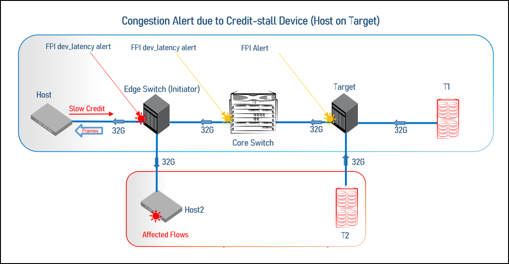

When traffic moves from device A to device B and device B fails to acknowledge and return buffer credits as required, the fabric holds frames for an excessive amount of time. The high-latency device B can cause application performance degradation, and it is referred to as a credit-stalled device.
Generally, a device can behave as a credit-stalled device under the following scenarios:
A credit-stalled device is one of the causes of fabric congestion. Fabric congestion is created when a receiving device stops issuing R_RDY buffer credits to the transmitting device for an abnormally long time and might not issue a credit until a frame loss or link reset occurs. As the transmitting device cannot increment its credit count without a R_RDY, it cannot move frames from the fabric. As a result, frames destined for the credit-stalled device back up immediately in the fabric, creating congestion in the network. 
The previous figure shows the condition where a credit-stalled device (Host 1) results in a buffer backup on Host 1. Due to this, congestion occurs at the initiator of the edge switch upstream. Once all available credits are exhausted, the switch port that is connected to the device must hold additional outbound frames until a buffer credit is returned by the device. The network underperforms as a result.
When a device does not respond in time, the transmitting switch is forced to hold frames for longer periods of time, resulting in a high buffer occupancy. This in turn, results in the switch lowering the rate at which it returns buffer credits to other transmitting switches. This effect propagates through switches (and potentially multiple switches when devices attempt to send frames to devices attached to the switch with the credit-stalled device), ultimately affecting the fabric.
Also, latency on inter-switch links (ISLs) can be caused by backpressure from latency elsewhere in the fabric. The cumulative effect of latency on many individual devices can result in slowing down the link. The link itself might be producing latency if it is a long-distance link with distance delays or if too many flows are using the same ISL. Although each device might not appear to be a problem, the presence of too many flows with some level of latency across a single ISL or trunked ISL might become a problem. Latency on an ISL can ripple through other switches in the fabric and affect unrelated flows.
If congestion on these ports is severe enough to impact fabric performance, the port is classified into one of two states:
MAPS generates FPI alerts when either the congestion levels or port latencies meet or exceed the thresholds that are specified in MAPS rules. Alerts might be generated through SNMP, RASLog, Email, or whatever you set as the action through MAPS for generating alerts.
The following example shows the credit-stall condition with the port details.
switch:admin> mapsdb --show congestion
1 Dashboard Information:
=======================
DB start time: Fri Apr 10 11:16:39 2024
Time Window: 13:04 - 12:04
Total Credit-Stalled ports: 5
Total Oversubscribed ports: 0
2 Credit-Stall State Frequency Table:
====================================
Port |Current Minute State |Frame Loss |Perf Impact |Medium |Low |Info |
------------------------------------------------------------------------------------------
E-Port 8/35 |Perf Impact |0 |60 |0 |0 |0 |
E-Port 7/3 |Perf Impact |0 |60 |0 |0 |0 |
E-Port 3/9 |Perf Impact |0 |60 |0 |0 |0 |
E-Port 8/32 |Perf Impact |0 |51 |9 |0 |0 |
E-Port 3/31 |Medium St |0 |0 |60 |0 |0 |
3 Oversubscription State Frequency Table:
========================================
Port |Current Minute State |Frequency|
-----------------------------------------------
The MAPS dashboard continues to log events whether RASLog messages are set to on or off in the congestion configuration. Refer to the Brocade Fabric OS Administration Guide for specific command details and congestion monitoring parameters.
When the latency conditions are cleared, the IO_LATENCY_CLEAR state generates alerts. For more information, see Latency State Clearing.
The following example shows first the MAPS dashboard displaying the IO_PERF_IMPACT report and then the IO_LATENCY_CLEAR report. The dashboard is edited to show only Section 3.The backslash character (\) in the following example indicates a break that is inserted because the output is too long to display here as a single line.
switch:admin> mapsdb --show
3.1 Summary Report:
===================
Category |Today |Last 7 days |
--------------------------------------------------------------------------------
Port Health |Out of operating range |No Errors |
BE Port Health |No Errors |No Errors |
Fru Health |In operating range |In operating range |
Security Violations |No Errors |No Errors |
Fabric State Changes |In operating range |No Errors |
Switch Resource |In operating range |In operating range |
Traffic Performance |In operating range |In operating range |
Extension Health |In operating range |No Errors |
Fabric Performance Impact|Out of operating range |In operating range |
-------------------Output truncated------------------------
3.2 Rules Affecting Health:
===========================
Category(Rule Count) |Repeat Count|Rule Name |\
------------------------------------------------------------------------\
Fabric Performance impact(1)|1 |defALL_PORTS_IO_PERF_IMPACT |\
\|Execution Time |Object |Triggered Value(Units)|
\------------------------------------------------------
\|02/19/24 22:48:01|F_Port 8/8 |IO_PERF_IMPACT |
The following example shows that the MAPS dashboard display changes after the latency is cleared on F_Port 8/8.
switch:admin> mapsdb --show
3.1 Summary Report:
===================
Category |Today |Last 7 days |
--------------------------------------------------------------------------------
Port Health |Out of operating range |No Errors |
BE Port Health |No Errors |No Errors |
Fru Health |In operating range |In operating range |
Security Violations |No Errors |No Errors |
Fabric State Changes |In operating range |No Errors |
Switch Resource |In operating range |In operating range |
Traffic Performance |In operating range |In operating range |
Extension Health |In operating range |No Errors |
Fabric Performance Impact|In operating range |In operating range |
3.2 Rules Affecting Health:
===========================
Category(Rule Count) |Repeat Count|Rule Name |\
--------------------------------------------------------------------------\
Fabric Performance impact(1)|1 |defALL_PORTS_IO_LATENCY_CLEAR |\
\|Execution Time |Object |Triggered Value(Units)|
\-----------------------------------------------------|
|02/19/2024:48:01 |F_Port 8/8 |IO_LATENCY_CLEAR |